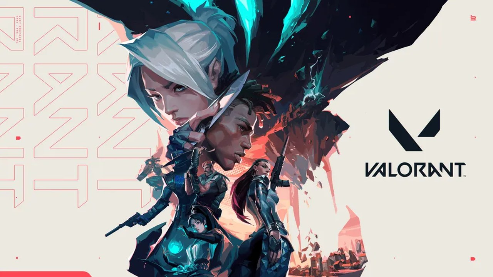
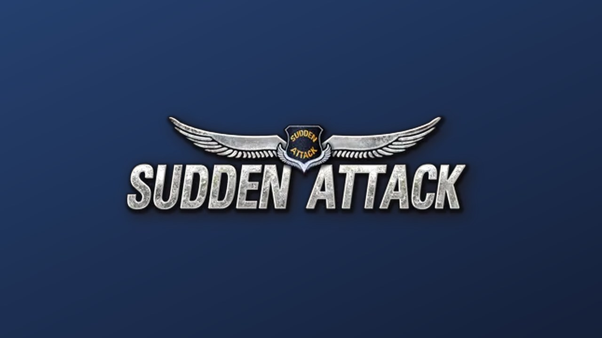

넥슨 오버워치가 이벤트 주말에 PC방 3위를 찍었고, 오늘 새벽 르세라핌이 다시 왔습니다. PC방 통계 더로그 기준 오버워치는 8/29(토) 점유율 9.07%로 전일 대비 +3.46%p 뛰며 리그 오브 레전드·발로란트에 이어 3위에 올랐고, 8/30(일)에도 8.74%로 3위를 지켰습니다. 직전 8월 3주차 주간 5.53%·6위에서 한 주 만에 올라온 수치입니다. 그리고 오늘 새벽 1시 블리자드가 르세라핌 × 오버워치 세 번째 콜라보 아트와 일정을 공개했습니다 — 9/11 뮤직비디오, 9/13 스킨 발매·게임플레이 트레일러·블리즈컨 스트림, 9/14 블리즈컨 퍼포먼스로 나흘에 걸쳐 쪼갠 편성입니다. 루리웹 두 게시판을 직접 확인하니 콜라보 글 조회는 6,088 + 4,810으로 어제 신작 슈터 트레일러들을 2~3배 웃돌았지만, 최다 추천 댓글은 "잘팔리나봐 꾸준히 콜라보하네"(추천 10)였습니다. 글로벌에서는 레인보우 식스 시즈 Y11 시즌3 '스플릿 파이어'가 오늘 출시되고(신규 오퍼레이터 누어는 공개 나흘 만에 너프됐습니다), 배틀필드 6·REDSEC 1.4.2.5도 오늘 배포됩니다. 오늘부터 해외 반응도 스팀 커뮤니티 원문을 직접 확인합니다 — 첫 사례인 델타포스는 2주년 시즌(9/8)을 일주일 앞두고 토론 최상위 글이 '오탐 밴 목록'(댓글 120)이었습니다.
커버리지
오늘부터 Call of Duty: MW4는 커버리지에서 제외합니다(8/31 리포트가 마지막). 다른 CoD 타이틀은 계속 다룹니다. 오픈 베타는 9/1 10:00 PT(9/2 새벽 KST) 종료 예정이며, 정식 출시(10/23) 전후에 별도로 재편입 여부를 판단합니다.
국내 포커스
오버워치 PC방 3위 · 9.07%
8/29 토 9.07%(전일 +3.46%p) · 8/30 일 8.74%로 이틀 연속 3위. 직전 주간은 5.53%·6위
논란·리스크 신호
프로모션 종료 절벽
3주 PC방 이벤트는
9/13에 끝납니다. 그 뒤를 받칠 장치가 아직 공개되지 않았습니다. 함께 볼 것 —
이용자 자체 집계가 사흘 새 3개 게임에서 관측.
상세 보기
국내 일정
르세라핌 콜라보 9/11–9/14
9/11 MV → 9/13 스킨 6종·트레일러·블리즈컨 스트림 → 9/14 블리즈컨 퍼포먼스
01
오늘의 일정
오늘 기준으로 마감·시작·진행되는 일정만. 자사 이벤트 편성을 잡을 때 먼저 보는 칸입니다.
움직이는 일정 16건
붉게 표시된 줄이 오늘(9/1) 진행 중입니다.
- 09.01 화시작레인보우 식스 시즈 Y11 시즌3 '오퍼레이션 스플릿 파이어' 출시 — 신규 방어 오퍼레이터 누어, 빌라 지하 리워크, 레전드 디비전, 보안 개선점검 14:00 CEST(≈21:00 KST) 추정 · 시즌 약 3개월
- 09.01 화시작배틀필드 6 · REDSEC 업데이트 1.4.2.5 배포 — 커스텀 로비 안정화, 헬기 미니건·레이저 지정 수정, 매치 종료 후 블랙스크린 완화EA 공지 8/31 23:00 KST
- 09.01 화진행오버워치 × 르세라핌 3차 콜라보 티저·아트 공개 — 스킨 6종(미즈키·프레야·디몬·안란·시에라·모이라)오늘 01:00 공개
- 09.01 화진행넥슨 오버워치 'PC방 오면 넥슨이 쏜다' 3주 프로모션 — 오늘은 1주차와 2주차 사이 평일 공백 구간8/29 – 9/13 · 주말만 운영
- 09.01 화진행델타포스 2주년 시즌 'Reorientation' 개발자 스트림 — 신규 서포트 오퍼레이터 로버 공개오늘 08:00 PDT(9/2 00:00 KST) · 시즌은 9/8 시작
- 09.03 목종료서든어택 '블랙마켓' 2주 한시 운영 마감 — D-2밀봉 아이템 영구제 거래 포함
- 09.04 금재개VCT 퍼시픽 스테이지 2 플레이오프 재개 — 상위 결승 농심 레드포스 vs 글로벌 e스포츠, 하위 3R T1 vs VARREL국내 4팀 중 2팀 생존
- 09.04 금시작CS2 BLAST Open Fall 2026 플레이오프 — 생존 6팀이 포르투갈 포르투 Super Bock Arena로 이동9/4 – 9/6 · 상금 110만 달러
- 09.05 토시작넥슨 OW PC방 2주차(루시우 '어반 호퍼') · 같은 주말 엔씨 '타임 테이커즈' 스팀 플레이테스트PC방 9/5–6 · 플레이테스트 9/5 02:00 – 9/8 02:00
- 09.06 일예정VCT 퍼시픽 스테이지 2 결승VLR.gg 표기 기준 · 공식 발표 확인 권장
- 09.08 화시작델타포스 2주년 시즌 'Reorientation' 시작 — 신규 오퍼레이터 로버·클로버. 앞서 9/4–9/7 랭크 더블 스코어사전등록 보상 9/1–9/10
- 09.10 목시작서든어택 e스포츠 대회 참가 신청 개시 — 10/3 예선전, 10/24 개막. 시즌4부터 대회 서버 데디케이티드 전환시즌4 '문라이즈'
- 09.11 금시작르세라핌 × 오버워치 뮤직비디오 공개 · 같은 날 마블 라이벌즈 시즌 10 시작(제3자 보도, 재확인 권장)시즌 10은 경쟁전 전면 리셋 예고
- 09.13 일시작르세라핌 스킨 발매 + 게임플레이 트레일러 + 블리즈컨 게임플레이 스트림 · 같은 날 넥슨 OW PC방 3주차 마지막 날(넥슨캐시 1만 원 매일 5,000명 추첨)프로모션 종료일
- 09.14 월예정르세라핌 블리즈컨 2026 퍼포먼스 — 폐막 무대블리즈컨 디지털 묶음 판매 ~9/29
- 09.17 목시작스페셜포스 리마스터 정식 출시 — 사전예약 ~9/16D-16 · 드래곤플라이 · UE5
02
오늘의 헤드라인
최근 24~48시간 구간에서 흐름이 바뀐 톱3.
 01국내 반등
01국내 반등
오버워치 · 넥슨 국내 서비스
이벤트 주말에 PC방 3위 — 그리고 오늘 새벽, 르세라핌이 다시 왔다
KR·기사지표커뮤니티 PC방 통계 더로그 기준 8/29 토요일 점유율 9.07%로 전일 대비 +3.46%p, LoL·발로란트에 이어 3위였습니다. 8/30에도 8.74%로 3위를 유지했고, 직전 8월 3주차 주간 순위가 5.53%·6위였으니 한 주 만에 순위와 점유율이 함께 뛴 셈입니다. 그리고 오늘 01시 르세라핌 3차 콜라보가 공개되며 다음 화력원이 예약됐습니다. 다만 두 이벤트 모두 넥슨·블리자드가 만든 창이지, 게임 자체가 만든 상승은 아직 아닙니다.
 02오늘 출시
02오늘 출시
레인보우 식스 시즈 · Y11 시즌3
6개월 전 티저는 '방패 카운터'였는데, 출시 전에 너프부터 맞았다
글로벌·기사국내 반응 미확인 '오퍼레이션 스플릿 파이어'가 오늘 출시됩니다. 간판은 신규 이집트 방어 오퍼레이터 누어인데, 2월 식스 인비테이셔널 티저에서는 '최초의 방패 카운터'로 소개됐습니다. 그런데 8월 EWC 공개 직후 크리에이터들이 실제로는 하드브리칭 차단용으로 더 강하다는 걸 찾아냈고, 유비소프트는 나흘 만에 "보강벽에서의 발동 시간이 원래 더 길었어야 한다"며 수정했습니다. 반응은 갈렸습니다 — "이제 존재 이유가 없다" 대 "원래 너무 셌다". 시즌 자체는 신규 콘텐츠보다 빌라 지하 리워크·보안 개선 같은 정비에 무게가 실렸습니다.

03온도 미상승
발로란트 · VCT 퍼시픽
결승이 이번 주말인데, 채널 최다 조회는 "탈주하겠다"는 글이었다
커뮤니티지표 아카라이브 발로란트 채널(구독 3,723명, 어제 대비 +1)을 직접 확인했습니다. 최근 사흘 글 가운데 조회가 가장 높은 건 여전히 8/30 "쩔 수없다 부캐 보일 때 마다 탈주해야지"로, 어제 60·추천 1이던 것이 오늘 101·추천 2·댓글 2까지 올랐습니다. 반면 8/31 새로 올라온 글은 최고 조회가 58(Champions Shanghai 진출 현황)이고, "발로란트 국가대표 선발전" 정보글은 조회 7에 그쳤습니다. 대회 소식은 안 퍼지고, 매칭 불만 글만 며칠에 걸쳐 계속 읽히는 구도가 나흘째입니다.
03
국내 포커스
국내 서비스·국내 배경 IP·국내 커뮤니티(인벤·루리웹·아카라이브) 반응 중심.
근거 표기KR·기사국내 매체가 전한 여론글로벌·기사해외 매체가 전한 여론커뮤니티원문 글을 직접 확인공식공식 공지가 근거(여론 아님)지표동접·평점 등 수치국내 반응 미확인국내 소스에서 확인 못 함
| 게임 | 이벤트 / 업데이트 | 날짜 | 유형 | 커뮤니티 반응 · 관전 포인트 |
|---|
오버워치넥슨 국내 서비스 |
PC방 점유율 3위 + 르세라핌 3차 콜라보 공개 — 8/29 9.07%(전일 +3.46%p)·8/30 8.74%로 이틀 연속 3위. 3주 프로모션은 8/29~9/13, 누적 플레이 시간에 따라 신화 프리즘 최대 110개, 게토 PC방 주 2시간 무료. 콜라보는 9/11 MV → 9/13 스킨 6종·트레일러·블리즈컨 스트림 → 9/14 블리즈컨 퍼포먼스 |
8/29–8/30 지표콜라보 9/11–9/14 |
PC방 프로모션 · K팝 콜라보 |
지표KR·기사커뮤니티공식 지표는 확실합니다 — 이벤트를 켠 주말에만 점유율이 3.46%p 뛰었습니다. 문제는 그 뒤입니다. 콜라보 공개 글을 루리웹 두 곳에서 직접 확인하니 콘솔 정보 게시판 조회 6,088·추천 14·댓글 4, PC 게임 정보 게시판 조회 4,810·추천 10·댓글 12로 화력은 분명했지만, 최다 추천 댓글이 "잘팔리나봐 꾸준히 콜라보하네"(추천 10)였습니다. 칭찬이 아니라 관성에 대한 지적입니다. 다른 댓글은 "괜히 수영복 스킨만 안 나오고"였고, 여기에 "콜라보가 있어도 그 시즌 스킨은 따로 나왔다"는 반박이 붙어 추천 4를 받았습니다 — 즉 콜라보가 정규 스킨을 잡아먹는다는 오해가 실재하고, 유저가 스스로 정정하고 있다는 뜻입니다. 공지문 한 줄로 없앨 수 있는 마찰입니다.게임톡(PC방 3위) · 인벤 · 루리웹 콘솔 정보(직접 확인) · 루리웹 PC 게임 정보(직접 확인) |
발로란트VCT 퍼시픽 · 국내 커뮤니티 |
플레이오프 재개 D-3 — 9/4 상위 결승 농심 레드포스 vs 글로벌 e스포츠, 하위 3R T1 vs VARREL. 결승 9/6. 농심은 챔피언스 상하이 진출 확정. 채널에는 V26 Act 5 맵 로테이션(브리즈 OUT·어비스 IN) 정보도 올라와 있음 |
재개 9/4결승 9/6 |
e스포츠 · 매칭 건전성 |
커뮤니티지표 아카라이브 발로란트 채널을 직접 확인한 결과, 매칭 성토가 나흘째입니다. 특히 8/30 "부캐 보일 때마다 탈주해야지" 글이 하루 만에 조회 60→101, 추천 1→2로 올라 최근 사흘 중 최다 조회가 됐습니다. 새로 올라온 8/31 글들은 최고 조회 58, 국가대표 선발전 정보글은 조회 7입니다. 어제 리포트에서 "불만이 감정 표출에서 행동 선언으로 넘어갔다"고 적었는데, 오늘 확인된 건 그 다음 단계입니다 — 행동 선언 글이 시간이 지나도 계속 읽히며 채널의 기준 문서처럼 굳고 있습니다. 이 단계를 넘으면 신규 유입자가 채널에 처음 들어와서 보는 글이 탈주 권유가 됩니다.아카라이브 발로란트 채널(직접 확인) · VLR.gg |
 서든어택21주년 · 넥슨 |
'블랙마켓' 마감 D-2 · e스포츠 일정 확정 — 9/3 마감. 시즌4 '문라이즈'는 신규 캐릭터 '루나'·무기 NOX(S), 무기 밸런스 4차 개편(DAP-2·TAC-9 등 권총 6종), 커스텀 에임, 16:9·시야각 옵션 단계 적용. 대회는 9/10 참가 신청 → 10/3 예선 → 10/24 개막, 대회 서버 데디케이티드 전환 |
~9/3 마감대회 9/10 접수 |
한시 거래 · 진행 업데이트 |
지표KR·기사 인벤 게임DB 유저 평점을 다시 확인했습니다 — 3.1/10 · 239명으로 8/28·8/31에 이어 나흘째 소수점까지 동일합니다. 분포도 그대로입니다: 1~2점 165명(69%), 3~4점 13명, 5~6점 16명, 7~8점 10명, 9~10점 35명(15%). 평가자는 20대 195명(82%)·남성 226명(95%). 21주년 프로모션이 매체에 계속 실리는 동안 새 평가가 한 건도 붙지 않았다는 사실이 나흘 연속 확인된 셈입니다. 반면 e스포츠 일정을 이번에 날짜까지 못박은 것은 결이 다릅니다 — 대회 서버를 데디케이티드로 바꾸겠다는 약속에 접수·예선·개막 날짜가 붙으면 검증 가능한 약속이 되기 때문입니다. 블랙마켓 마감 48시간은 시세·형평성 문의가 몰리는 구간이라 오늘·내일이 CS 대비 구간입니다.인벤 게임DB(직접 확인 · 3.1·239명) · 인벤(시즌4 문라이즈) · 게임메카 |
 스페셜포스 리마스터드래곤플라이 · 레거시 FPS 스페셜포스 리마스터드래곤플라이 · 레거시 FPS |
정식 출시 D-16 — 9/17 출시, 사전예약 ~9/16(웰컴 패키지). UE5 기반 그래픽 개편, 원작 반동 패턴·타격감 계승, 6개월 앞서 해보기 종료 후 정식 전환 |
9/17 출시D-16 |
레거시 IP 복귀 |
KR·기사국내 반응 미확인 나흘 연속 국내 커뮤니티 거점이 확인되지 않습니다. 오늘 루리웹 신설 게시판 목록을 다시 봤는데 8/31과 완전히 동일했고(최상단이 여전히 PUBG: 데드넷·프로젝트 제타), 스페셜포스는 없습니다. 오늘은 아카라이브 채널 목록도 전수 확인했는데 역시 없었습니다. 출시 16일 전인데 기사 노출은 계속 있고 커뮤니티 거점은 0인 상태가 굳어지고 있습니다. 어제 적은 "D-30 커뮤니티 거점 KPI"를 다시 강조합니다 — 다만 오늘 한 가지 덧붙이면, 거점이 안 생기는 게 반드시 무관심 때문만은 아닙니다. 6개월 앞서 해보기를 돌린 프로젝트라 기존 테스터가 이미 공식 채널·카페에 묶여 있을 가능성도 있습니다. 그렇다면 지금 필요한 건 신규 게시판이 아니라 그 폐쇄 채널의 대화를 공개 공간으로 옮겨 오는 작업입니다.루리웹 신설 게시판(직접 확인) · 아카라이브 채널 목록(직접 확인) · 게임메카 |
국내 커뮤니티 지형루리웹 · 아카라이브 실측 |
아카라이브 채널 목록 전수 확인 — FPS·슈터 계열 채널 구독자 규모를 오늘 직접 집계. 루리웹 신설 게시판은 8/31 이후 신규 추가 0건 |
9/1 실측경로표 갱신 |
측정 도구 점검 |
커뮤니티지표 오늘 아카라이브 채널 목록을 훑으면서 측정 도구 자체의 편향이 드러났습니다. 슈터 계열 채널은 발로란트 3,723명 · 헬다이버즈2 4,928명 · 이스케이프 프롬 타르코프 4,158명 · 가이진(워썬더) 9,715명 수준인데, 같은 사이트에서 블루 아카이브 113,877명 · AI 그림 106,009명 · 원신 102,848명입니다. 아카라이브는 서브컬처 편중이 워낙 커서 슈터 여론의 절대량을 재는 데는 부적합하고, 같은 채널 안의 시계열 변화(구독자 증감·글별 조회)로만 써야 한다는 뜻입니다. 루리웹 신설 게시판은 어제와 동일해 새로 관심이 붙은 슈터는 오늘 없었습니다. 이 두 문장을 함께 읽으면 오늘의 국내 화력은 사실상 루리웹 정보 게시판 한 곳에 몰려 있었고, 그 화력을 가져간 건 K팝 콜라보였습니다.아카라이브 채널 목록(직접 확인) · 루리웹 PC 게임 정보(직접 확인) |
04
글로벌 포커스
해외 라이브서비스 슈터의 신규 시즌·이벤트·밸런스와 커뮤니티 반응.
| 게임 | 이벤트 / 업데이트 | 날짜 | 유형 | 커뮤니티 반응 · 관전 포인트 |
|---|
레인보우 식스 시즈Y11 시즌3 '스플릿 파이어' |
오늘 출시 — 신규 이집트 방어 오퍼레이터 누어(게임 최초의 직접 방패 카운터, 마에스트로의 LMG 사용), 오퍼레이터 밸런스, 빌라 지하 리워크, 레전드 디비전, 보안 개선. 시즌 길이 약 3개월, Y11 마지막 시즌은 BLAST R6 메이저 오사카(11/7–11/15)에서 공개 |
9/1 출시점검 14:00 CEST 추정 |
시즌 전환 · 사전 너프 |
글로벌·기사국내 반응 미확인 이번 시즌의 진짜 이야기는 콘텐츠가 아니라 공개와 출시 사이에 벌어진 일입니다. 누어는 2월 식스 인비테이셔널 티저에서 '방패에 발사체를 쏘는 오퍼레이터'로 소개됐는데, 8월 EWC 정식 공개 후 크리에이터들이 실제 성능은 투바라오·카이드·밴딧과 같은 하드브리칭 차단에 가깝다는 걸 보여줬습니다. 유비소프트는 나흘 만에 "보강벽에서의 발동 시간이 원래 더 길었어야 한다"며 버그 수정으로 규정하고 하향했습니다. 반응은 갈렸습니다 — "이제 방패 카운터로도 약해서 존재 이유가 없다" 대 "하드브리처 상대로 너무 셌다". 국내에서는 전용 채널이 확인되지 않아 여론 미확인으로 둡니다.SiegeGG(스플릿 파이어 출시) · SiegeGG(누어 너프) |
 배틀필드 6 · REDSEC시즌 4 진행 중 배틀필드 6 · REDSEC시즌 4 진행 중 |
업데이트 1.4.2.5 오늘 배포 — 1.4.2.0 이후 발견된 문제 정리. 포털 커스텀 로비 '시작' 타일 응답 불가 수정, 캐리어 스트라이크에서 전투기 레이저 지정 정상화, 헬기 미니건이 물속 병사에게 피해, 매치 종료 후 블랙스크린 다수 원인 해소, Xbox Series S 무응답 수정, 배틀로얄 쿼드·건틀릿 파이터 스윕 조정 |
9/1 배포공지 8/31 |
품질 개선(QoL) 패치 |
공식글로벌·기사국내 반응 미확인 새 콘텐츠가 하나도 없는 패치인데도 EA가 별도 공지로 따로 냈다는 점이 참고할 대목입니다. 항목을 보면 "매치 끝나고 검은 화면", "커스텀 로비 시작 버튼이 안 눌림", "핑이 안 찍힘"처럼 전부 커뮤니티가 반복해서 올리던 종류의 불편입니다. 그리고 공지에 "남은 발생 건은 계속 조사 중"이라고 완전히 못 고쳤다는 사실을 그대로 적었습니다. 라이브 운영에서 이런 문장은 손해처럼 보이지만, 다음에 같은 증상이 나왔을 때 "알고 있으면서 방치했다"는 비난을 미리 차단합니다. 국내에서는 전용 커뮤니티 반응이 확인되지 않았습니다.EA 공식(1.4.2.5 패치노트) |
 마블 라이벌즈시즌 9.5 마무리 마블 라이벌즈시즌 9.5 마무리 |
8/27 패치 적용 · 시즌 10은 9/11로 보도(공식 공지 미확인 · 재확인 권장) — 시즌 10은 54번째 영웅, 경쟁전 전면 리셋, 새 배틀패스 예고. 현재는 시즌 9.5(신규 뱅가드 The Hood) 종료 구간이고, S9 인센티브 이벤트 수상자 발표도 마무리됨 |
9/11 시작D-10 |
시즌 전환 예고 · 진행 업데이트 |
글로벌·기사국내 반응 미확인 반복 이슈라 짧게 남깁니다. 어제 짚은 '랭크 리셋을 11일 전에 미리 확정 공지한 설계'는 오늘도 유효하고, 오늘 덧붙일 건 주간 단위 패치 리듬입니다 — 8/7(시즌 9.5), 8/13, 8/20, 8/27로 거의 매주 패치가 나갑니다. 이 리듬의 장점은 불만이 쌓일 틈을 안 준다는 것이고, 대가는 패치 하나하나의 무게가 가벼워져 큰 개선도 뉴스가 안 된다는 점입니다. 자사 패치 주기를 정할 때 "체감되는 변화 1건을 언제 넣을지"를 주기와 따로 계획해야 하는 이유입니다.마블 라이벌즈 공식(8/27 패치노트) · 시즌 10 9/11 보도(제3자·재확인 권장) |
 Counter-Strike 2BLAST Open Fall 2026 Counter-Strike 2BLAST Open Fall 2026 |
플레이오프 D-3 — 상금 110만 달러(선수 40만 + 클럽 셰어 70만), 16개 팀 GSL 2개 조. 코펜하겐 스튜디오 조별 예선을 마친 생존 6팀이 포르투갈 포르투 Super Bock Arena에서 9/4–9/6 플레이오프 |
8/26–9/6PO 9/4–9/6 |
e스포츠 · 진행 업데이트 |
글로벌·기사국내 반응 미확인 반복 이슈라 진행 상태만 남깁니다. 국내에서는 루리웹 해시태그 외 전용 채널이 확인되지 않아 여론 미확인입니다. 편성 구조(온라인 스튜디오 예선 → 오프라인 아레나 결선)는 어제 정리한 그대로이고, 오늘 한 줄 덧붙이면 이번 주말은 VCT 퍼시픽 결승(9/6)과 정면으로 겹칩니다. 국내 시청 파이를 놓고 보면 같은 시간대에 두 슈터 대회가 붙는 첫 주말이라, 자사 e스포츠 편성을 잡을 때 9월 첫 주말은 이미 포화라고 봐야 합니다.Liquipedia(BLAST Open Fall 2026) |
 에이펙스 레전드시즌 30 'Marked' 에이펙스 레전드시즌 30 'Marked' |
시즌 30 밸런스 여진 3주차 — 블러드하운드 리워크 이후 액슬·블러드하운드·시어 연속 너프, 로바·램파트 버프, 월드 엣지 갱신, Corrupted 부착물 |
8/22–23 적용3주차 진입 |
밸런스 반발 · 진행 업데이트 |
글로벌·기사국내 반응 미확인 반복 이슈라 짧게 정리합니다. "리워크해 놓고 곧바로 너프" 피로가 7월 백래시(No.22)에 이어 누적된 상태 그대로입니다. 다만 오늘 상황은 지난주와 달라졌습니다 — MW4 오픈 베타가 오늘 끝나면서 무료로 빨려 나갔던 슈터 플레이타임이 풀립니다. 즉 이번 주는 이탈했던 이용자가 돌아올 수 있는 창인데, 리스판이 이 창에 맞춰 내놓은 복귀 유인은 확인되지 않습니다. 운영 관점의 교훈도 어제와 짝을 이룹니다 — 경쟁작 무료 테스트가 끝나는 주에는 복귀 캠페인을 미리 걸어 두는 것이 기본기입니다.esports.gg(시즌 30 Marked 패치노트) · EA 공식 |
 델타포스2주년 시즌 'Reorientation' D-7 델타포스2주년 시즌 'Reorientation' D-7 |
2주년 시즌 'Reorientation' 9/8 시작 · 개발자 스트림 오늘 — 신규 서포트 오퍼레이터 로버(Rover)와 동반 유닛 클로버(Clover) 공개. 원거리 힐 + 추격 담당 구성. 시즌 프리뷰 9/1~9/7, 사전등록 로그인 보상 9/1~9/10, 랭크 더블 스코어 'Home Stretch' 9/4~9/7. 한정 델타 티켓은 9/3 만료 |
9/8 시즌 시작스트림 9/1 08:00 PDT |
시즌 전환 · 제재 신뢰 |
커뮤니티지표공식국내 반응 미확인 스팀 커뮤니티 허브를 직접 확인했습니다 — 인게임 37,138명. 그런데 시즌 D-7에 토론 게시판 최상위 글이 "오탐 밴 목록"(댓글 120)이었습니다. 러시아어·영어 병기로 "부당하게 차단된 사례를 댓글로 모으자"며 이용자가 직접 통계를 취합하는 형태입니다. 어제 MW4 컨버터 항목에서 짚은 '탐지법 공유' 단계와 정확히 같은 신호인데, 여기서는 대상이 치터가 아니라 운영사의 제재 자체라 더 무겁습니다 — 이용자가 자체 집계를 시작했다는 건 공식 이의제기 동선이 신뢰를 잃었다는 뜻입니다. 리뷰 쪽도 결이 비슷합니다. 8/31 비추천 리뷰(플레이 19.6시간)는 컨트롤러 바인딩 오류와 함께 "언인스톨했는데 안티치트 잔여 파일이 여러 경로에 남았다"를 지적했습니다. 안티치트가 밴·잔여물 양쪽에서 동시에 불신을 사는 국면이라, 2주년 시즌의 신규 오퍼레이터 홍보만으로 이 대화를 덮기는 어려워 보입니다.스팀 커뮤니티 허브(직접 확인) · 스팀 상점 |
05
신작 동향
개별 신작 카드(02)와 달리 신작을 둘러싼 흐름과 맥락을 짚는 칸.
화력 비교K팝 IP
같은 게시판, 같은 24시간
10년 된 게임의 아이돌 콜라보가 신작 슈터 트레일러보다 3배 읽힌다
어제 새벽 루리웹 PC 게임 정보 게시판에는 게임스컴 슈터 신작 트레일러가 몰려 올라왔고, 조회는 라이크 오어 다이 2,890 / 프로젝트 제타 1,895 / 노 로우 786이었습니다. 오늘 새벽 같은 게시판에 올라온 오버워치 × 르세라핌 콜라보 글은 4,810, 루리웹 콘솔 정보 게시판의 같은 글은 6,088입니다. 합치면 1만을 넘습니다.
관전 포인트이 격차는 게임의 재미가 아니라 '이미 아는 것'의 크기에서 나옵니다. 신작 트레일러는 게임과 개발사를 동시에 설명해야 하지만, 콜라보는 양쪽 팬덤이 이미 아는 두 고유명사를 붙이기만 하면 됩니다. 그래서 신작에게 콜라보는 함정이기도 합니다 — 인지도가 없는 상태에서 콜라보를 하면 상대 IP의 조회만 빌려 오고 우리 이름은 안 남습니다. 반대로 오버워치처럼 이름이 이미 선 게임에서는 콜라보가 가장 싼 화력원이고, 실제로 이번이 르세라핌과 세 번째입니다. 다만 값이 있습니다 — 오늘 최다 추천 댓글이 "잘팔리나봐 꾸준히 콜라보하네"였다는 건, 반복이 화제성은 유지하되 호감은 갉아먹는 구간에 들어섰다는 신호입니다. 자사 IP라면 콜라보 횟수보다 "이번 콜라보가 지난번과 무엇이 다른가"를 한 줄로 말할 수 있는지를 기준으로 삼으세요.
관심 공백레거시 IP
출시 D-16, 커뮤니티 거점 0
거점이 없다는 건 무관심일 수도, 대화가 닫힌 곳에 있다는 뜻일 수도 있다
스페셜포스 리마스터는 9/17까지 16일을 남겼는데, 오늘 루리웹 신설 게시판과 아카라이브 채널 목록을 모두 확인해도 전용 공간이 없습니다. 나흘 연속입니다. 같은 목록에서 게임스컴 공개작들은 며칠 만에 자리를 잡았습니다.
관전 포인트어제는 이걸 관심 부족으로 읽었는데, 오늘 한 가지 가능성을 더 얹습니다. 이 프로젝트는 6개월짜리 '앞서 해보기'를 이미 돌렸습니다. 그렇다면 실사용자 대화는 공식 카페·디스코드 같은 닫힌 공간에 이미 고여 있을 수 있습니다. 두 경우의 처방은 정반대입니다 — 관심 부족이면 노출을 사야 하고, 대화가 닫혀 있으면 옮겨 와야 합니다. 구분하는 방법은 간단합니다: 공식 채널의 일간 활성 사용자와 문의 유형을 보면 됩니다. 문의가 "언제 나오나요" 중심이면 관심은 있고 거점만 없는 것이고, 문의 자체가 적으면 노출 문제입니다. 자사 레거시 IP 리부트 체크리스트에 "D-30 커뮤니티 거점 유무"와 함께 "닫힌 채널 대화량"을 같이 넣어 두세요. 둘 다 0이면 그때가 진짜 위험 신호입니다.
일정 관찰캐시 경과
9월 슈터 캘린더
9월 첫 2주는 신작이 아니라 '시즌 전환'으로 채워진다
IGDB 등록 기준 9월 슈터 신작에서 규모가 잡히는 건 Hawked(9/7), 스페셜포스 리마스터(9/17), 에이스 컴뱃 8(9/29), EVE Vanguard(9월 말) 정도이고 나머지는 소규모 인디입니다. 대신 라이브서비스 쪽 전환이 빽빽합니다 — R6 Y11S3(오늘), 마블 라이벌즈 시즌 10(9/11 보도), 오버워치 시즌4 중간 패치(9월 · 레거시 배틀패스 언볼트).
관전 포인트어제까지는 "9월이 비어 있다"고 봤는데, 오늘 라이브서비스 일정을 겹쳐 보니 결론이 조금 바뀝니다 — 9월 첫 2주가 비어 있는 건 신작 기준이고, 이용자 시간 기준으로는 시즌 전환이 연달아 들어옵니다. 신규 시즌은 기존 이용자를 붙잡는 힘은 크지만 새 이용자를 데려오는 힘은 약합니다. 그래서 이 구간에 자사 프로모션을 넣을 거라면 노리는 건 경쟁작 신규 유입이 아니라 "여러 슈터를 병행하는 이용자의 시간 배분"이어야 합니다. 주의: 이 카드의 근거인 igdb_upcoming.json은 2026-08-28 13:17 생성분으로 4일 경과한 캐시입니다. 그사이 추가·변경된 일정이 빠져 있을 수 있어, 국내 일정은 인벤 게임 캘린더와 교차 확인이 필요합니다.
06
리스크 신호와 운영 교훈
남의 사고에서 먼저 배우는 칸.
HIGH · 프로모션 종료 절벽
주말에만 3위로 올라가는 그래프는, 이벤트가 끝나는 날 그대로 내려온다
무엇이넥슨 오버워치의 PC방 점유율은 이벤트를 켠 8/29 토요일에 9.07%(전일 대비 +3.46%p), 8/30 일요일 8.74%로 이틀 연속 3위였습니다. 직전 주간 평균은 5.53%·6위였습니다. 즉 상승분의 대부분이 이벤트가 켜진 이틀에 집중돼 있습니다. 프로모션은 주말 3회(8/29–30, 9/5–6, 9/12–13)로만 구성되고 9/13에 끝납니다. 그 이후를 받칠 장치는 아직 공개되지 않았습니다.
맥락보상 설계를 보면 이 구조가 더 또렷합니다 — 주차별 전설 스킨 1종 + 누적 플레이 시간 기반 신화 프리즘(3주 최대 110개)이고, 3주차에만 넥슨캐시 추첨이 붙습니다. 후행 보상을 마지막 주에 배치한 건 3주차 이탈을 막는 좋은 판단이지만, 뒤집어 말하면 가장 큰 유인이 종료일에 소진된다는 뜻이기도 합니다. 여기에 르세라핌 콜라보 스킨이 9/13에 발매돼 같은 날 한 번 더 정점을 만들고, 9/14 블리즈컨 퍼포먼스를 끝으로 예정된 이벤트가 없습니다.
우리 운영 교훈
- 프로모션 성과는 피크가 아니라 '종료 다음 주 평일'로 보고하세요. 이번 사례에서 진짜로 확인해야 할 숫자는 9.07%가 아니라 오늘(9/1, 화요일)의 점유율과 9/15~9/19 평일 평균입니다. 피크만 보고하면 매번 이벤트를 더 크게 여는 것 말고 다른 선택지가 안 남습니다.
- 종료일 다음 주에 걸칠 '작고 지속적인 장치'를 종료 전에 예고하세요. 큰 이벤트를 하나 더 얹으라는 뜻이 아닙니다 — 상시 도전과제, 주간 로그인, 시즌 패스 가속처럼 비용이 적고 매일 열리는 장치면 충분합니다. 핵심은 이용자가 종료일 전에 "그다음에도 할 게 있다"를 알게 되는 것입니다.
- PC방 프로모션은 '어디서 플레이하는가'를 바꿀 뿐 '얼마나 남는가'는 안 바꿉니다. 점유율 지표는 PC방 안에서의 비중이라 집에서 하던 이용자가 PC방으로 옮겨 오기만 해도 오릅니다. 신규·복귀 판단에는 신규 계정 생성·복귀 로그인·평균 플레이 세션을 반드시 함께 보세요.
HIGH · 이용자 자체 집계
사흘 사이 세 게임에서 같은 일이 벌어졌다 — 이용자가 운영을 대신 집계하기 시작했다
무엇이서로 관련 없는 세 게임에서 같은 형태의 행동이 관측됐습니다. MW4(8/30) — 루리웹 콜오브듀티 콘솔 게시판에 "상대방이 컨버터 있는지 확인하는 방법"(댓글 11)이 올라와 이용자가 탐지법을 직접 만들어 공유했습니다. 발로란트(8/30→오늘) — 아카라이브 채널의 "부캐 보일 때마다 탈주해야지"가 하루 만에 조회 60→101로 오르며 채널 최다 조회가 됐습니다. 불만이 행동 규범으로 굳은 것입니다. 그리고 델타포스(오늘) — 스팀 토론 게시판 최상위가 "오탐 밴 목록"(댓글 120)으로, 이용자가 부당 제재 사례를 댓글로 모아 자체 데이터베이스를 만들고 있습니다.
맥락셋을 나란히 놓으면 단계가 보입니다. ① 불만 표출 → ② 판별법 공유(MW4) → ③ 행동 규범화(발로란트의 '탈주') → ④ 자체 집계·DB 구축(델타포스의 밴 목록). 뒤로 갈수록 운영이 제공했어야 할 기능을 이용자가 자력으로 대체하는 정도가 커집니다. 탐지·판정·집계·이의제기는 원래 운영사만 데이터를 가진 영역인데, 그걸 이용자가 불완전한 표본으로 대신하기 시작한 겁니다. 그래서 ④는 단순히 불만이 큰 상태가 아니라 공식 창구가 신뢰를 잃었다는 진단에 가깝습니다. 세 사례 모두 운영사가 해당 항목에 대해 최근 공개적으로 답하지 않았다는 공통점도 있습니다.
우리 운영 교훈
- 이 4단계를 그대로 리스닝 지표로 쓰세요. 매주 이슈별로 "지금 몇 단계인가"를 한 글자로 기록하면, 같은 불만량이라도 악화 속도가 보입니다. ②에서 ④까지 가는 데 보통 며칠 걸리지 않습니다 — 이번 관측도 사흘 안에 세 단계가 다 나왔습니다.
- ④가 관측되면 최우선 조치는 해명도 처벌 발표도 아닙니다. 이의제기 동선·처리 기한(SLA)·결과 통보 방식을 한 페이지에 못박는 것이 먼저입니다. 이용자가 집계를 시작한 이유는 "어디에 말해야 처리되는지 모르겠다"이지, 처벌이 약해서가 아닙니다.
- 자체 집계는 반박하지 말고 인수하세요. "그 목록은 부정확하다"고 대응하면 집계는 사라지지 않고 음지로 가면서 숫자만 커집니다. 대신 커뮤니티가 모은 사례를 공식 채널로 접수하는 창구를 열면 세 가지를 동시에 얻습니다 — 오인·마녀사냥 감소, 실제 오탐 표본 확보, 그리고 "듣고 있다"는 신호. 델타포스는 2주년 시즌을 일주일 앞두고 이 선택지 앞에 서 있고, 신규 오퍼레이터 홍보로 덮으려 하면 시즌 첫 주 여론이 밴 이야기로 채워질 공산이 큽니다.
MID · 장기 티저와 실물의 간극
2월에 "방패 카운터"라고 소개한 캐릭터가, 8월엔 다른 이유로 세다는 말을 들었다
상황레인보우 식스 시즈의 신규 오퍼레이터 누어는 2026년 2월 식스 인비테이셔널에서 방패 이용자에게 발사체를 쏘는 짧은 애니메이션으로 처음 예고됐습니다. 6개월 뒤 EWC 2026에서 정식 공개되자, 커뮤니티의 첫 반응은 방패가 아니라 "하드브리칭 차단용으로 너무 세다"였습니다. 유비소프트는 나흘 만에 하향하면서 이를 너프가 아니라 "보강벽에서의 발동 시간이 원래 더 길었어야 하는 버그"로 설명했습니다. 결과적으로 "방패 카운터로도 약하고 브리칭 차단도 못 하는 애매한 캐릭터"라는 평과 "원래 이게 맞다"는 평이 함께 붙은 채 오늘 출시됩니다.
우리 운영 교훈장기 티저의 위험은 기대가 커지는 것이 아니라 기대의 방향이 고정되는 것입니다. 2월에 "방패 카운터"라고 말해 두면, 8월에 실제 성능이 아무리 좋아도 방패 카운터로서 평가받습니다. 그래서 공개 시점에 컨셉 문장을 반드시 갱신해야 합니다 — "이 캐릭터는 A를 위해 설계했고, 테스트 결과 B에도 강해서 B는 이 정도로 조정했다"까지 한 문단에 넣으면, 나흘 뒤 하향이 배신이 아니라 예고된 조정이 됩니다. 반대로 이번처럼 수정을 '버그 픽스'로만 설명하면, 이용자는 "그럼 우리가 본 성능은 뭐였나"를 묻게 되고 신뢰가 성능보다 먼저 깎입니다. 우리 쪽 체크리스트: ① 티저 문구와 출시 문구를 같은 사람이 대조할 것, ② 사전 공개 후 커뮤니티가 찾아낸 용도를 별도 항목으로 기록할 것, ③ 출시 전 조정은 이유와 수치를 함께 낼 것.
MID · 호평 사례
콜라보를 하루에 다 쏟지 않았다 — 나흘에 네 번 열리는 편성
상황오늘 새벽 공개된 르세라핌 × 오버워치 3차 콜라보의 일정은 9/11 뮤직비디오 → 9/13 스킨 발매 + 게임플레이 트레일러 + 블리즈컨 게임플레이 스트림 → 9/14 블리즈컨 퍼포먼스입니다. 아트와 스킨 목록(6종)은 공개 첫날인 오늘 한꺼번에 풀되, 실제 이벤트는 나흘에 걸쳐 네 번 열립니다. 여기에 넥슨 PC방 3주차(9/12–13)가 정확히 겹칩니다.
우리 운영 교훈배울 점은 '티저 → 실물' 사이를 열흘 벌리고, 그 사이에 접점을 계단식으로 놓았다는 구조입니다. 오늘 아트를 다 풀어 커뮤니티가 미리 떠들 재료를 주고, 9/11 MV로 게임 밖 팬덤을 데려오고, 9/13에 구매 시점과 게임 내 노출을 붙이고, 9/14 오프라인 무대로 마무리 화제를 만듭니다. 자사 콜라보 기획에 그대로 옮길 수 있는 최소 형태는 "공개일 ≠ 발매일 ≠ 최대 노출일"을 서로 다른 날로 잡는 것입니다. 한 가지 조건이 있는데 — 각 날짜마다 '그날만의 새 정보'가 있어야 합니다. 같은 소재를 나눠 올리기만 하면 계단이 아니라 반복으로 읽히고, 오늘 최다 추천 댓글이 보여 준 "또 콜라보네" 반응이 앞당겨질 뿐입니다.
07
CM 액션 제안
오늘 바로 착수 가능한 두 가지.
1
이벤트 리포트 양식을 '피크 → 종료 후 평일'로 바꾸기 — 오늘 표만 고치면 됩니다
넥슨 오버워치 사례는 좋은 템플릿을 줍니다. 지금 쓰는 이벤트 결과 보고서에 세 칸만 추가하세요 — (1) 이벤트 직전 평일 평균, (2) 이벤트 피크, (3) 종료 후 첫 평일 5일 평균. 그리고 성과 문장을 "피크 대비 몇 %"가 아니라 "직전 평일 대비 종료 후 평일이 몇 % 올랐는가"로 쓰게 하세요. 이 한 줄 차이가 "이벤트를 또 열자"와 "무엇이 남았나"를 가릅니다. 오늘 당장 할 수 있는 실측도 있습니다 — 9/1(화)·9/2(수) 점유율을 기록해 두면 9/13 종료 후 평일과 비교할 기준선이 생깁니다. 기준선은 이벤트가 끝난 뒤에는 만들 수 없습니다. 덧붙여 PC방 점유율처럼 '장소 이동'으로도 오르는 지표에는 반드시 신규 계정·복귀 로그인·평균 세션 길이를 짝지어 두세요.
2
콜라보 공지문에 두 문장 넣기 — "정규 스킨은 그대로 나옵니다"와 "지난번과 다른 점"
오늘 루리웹 댓글에서 실제로 관측된 마찰은 두 가지였습니다. 하나는 "괜히 수영복 스킨만 안 나오고"처럼 콜라보가 정규 시즌 스킨을 잡아먹는다는 오해인데, 이건 유저가 직접 "콜라보가 있어도 그 시즌 스킨은 따로 나왔다"고 반박해 추천 4를 받았습니다. 운영이 해야 할 설명을 유저가 대신하고 있다는 뜻입니다. 공지문에 "이번 콜라보 스킨은 시즌 정규 보상과 별개이며, 시즌 스킨 일정은 변동 없습니다" 한 줄만 넣으면 사라지는 마찰입니다. 다른 하나는 최다 추천 댓글 "잘팔리나봐 꾸준히 콜라보하네" — 반복에 대한 냉소입니다. 여기에 대한 답은 횟수를 줄이는 게 아니라 "이번엔 무엇이 처음인가"를 공지 첫 문단에 박아 두는 것입니다(대상 영웅 구성, 신규 형식, 오프라인 연계 등). 두 문장 다 비용 0원이고 오늘 쓸 수 있습니다. 자사 콜라보 공지 템플릿에 고정 항목으로 넣어 두세요.
유의사항
커뮤니티 수치(루리웹 콘솔 정보 조회 6,088·추천 14·댓글 4 / 루리웹 PC 게임 정보 조회 4,810·추천 10·댓글 12 / 아카라이브 발로란트 채널 구독 3,723명·글별 조회 101·58·7 / 인벤 게임DB 평점 3.1·239명 / 아카라이브 채널 구독자 수 / 스팀 커뮤니티 델타포스 인게임 37,138명·토론 댓글 120)는 모두 2026-09-01 오전 직접 확인 시점 기준이며 이후 변동될 수 있어 대외 공유 전 재확인 권장. PC방 점유율(9.07%·8.74%·5.53%)은 PC방 통계 서비스 '더로그'를 인용한 게임톡 8/31 16:03 기사 기준이며, 집계사·집계 기준이 다른 통계(게임트릭스 등)와는 수치가 다를 수 있으니 같은 표에 섞지 마세요. 르세라핌 콜라보 정보는 블리자드 공식 X(@OverwatchKR) 게시물을 인용한 루리웹·인벤 보도 기준이며 스킨 대상 영웅 표기(디몬/D.Mon 등)는 매체마다 다를 수 있습니다. R6 '스플릿 파이어'의 점검 시각 14:00 CEST는 SiegeGG의 추정치로 유비소프트 공식 발표가 아닙니다. 마블 라이벌즈 시즌 10 9/11은 여전히 제3자 보도이며 공식 공지는 확인되지 않았습니다. 9월 일정의 근거인 assets/igdb_upcoming.json은 2026-08-28 13:17 생성분으로 4일 경과한 캐시입니다. 아카라이브는 오늘 채널 목록 전수 확인 결과 서브컬처 편중이 매우 커(블루 아카이브 113,877명 대 발로란트 3,723명) 슈터 여론의 절대량 비교에는 쓰지 말고 같은 채널 내 시계열로만 해석해야 합니다. Call of Duty: MW4는 오늘 리포트부터 커버리지에서 제외됩니다.
출처 링크 16건
FPS 이벤트 동향 레이더 · 라이온하트 · 자동 생성 리포트 · No.54
모니터링: 루리웹 · 인벤 · 아카라이브 · 스팀 커뮤니티 · 해외 전문지 (국내+글로벌 병행)